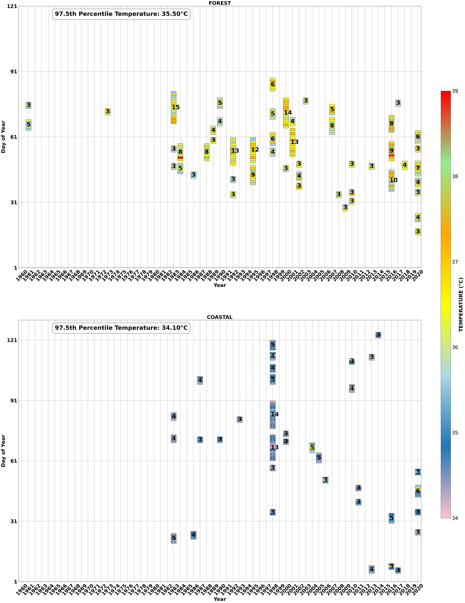
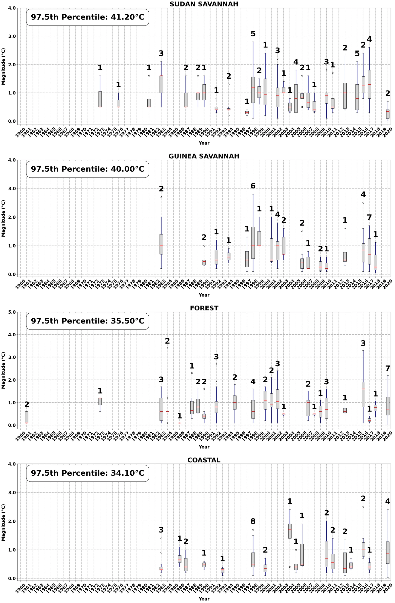

Documenting Ghana’s changing heat waves
Historical patterns of heat-wave frequency, duration, and intensity across Ghana’s climatic zones.
- Record
- 1961–2020
- Data
- GMet stations
- Threshold
- 97.5th percentile
- Duration
- 3+ days
The question
How have heat waves changed across Ghana’s climatic zones?
This collaborative study documents historical heat-wave occurrence using daily maximum temperatures from the Ghana Meteorological Agency.
Data & methods
A closer look at
the approach.
Heat waves are defined as at least three consecutive days above the historical 97.5th-percentile temperature threshold for each climatic zone. The analysis compares prevalence, frequency, duration, intensity, and temporal trends.
Findings & context
What the work shows.
- Heat waves became more frequent, longer, and more intense during 1961–2020, with stronger increases after 1980.
- Heat-wave intensity generally decreases from northern to southern climatic zones.
- The Sudan Savannah experiences the most extreme heat waves, followed by the Guinea Savannah, Forest, and Coastal zones.
Available as an SSRN preprint; not peer reviewed.
Read the preprintFrom the analysis
Research figures.
Select a figure to view it larger.
{kind=link}
{kind=link}

{kind=link}
